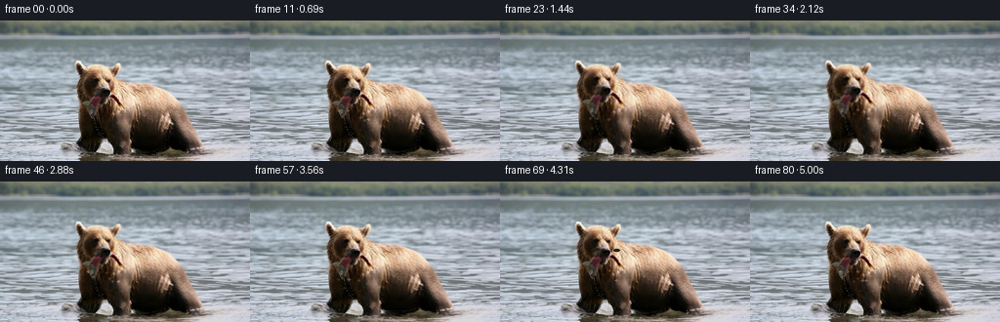
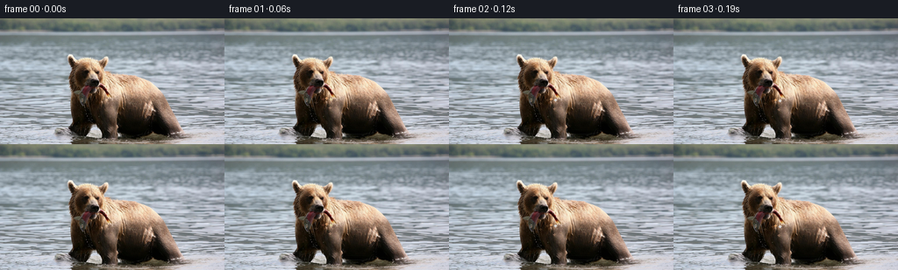
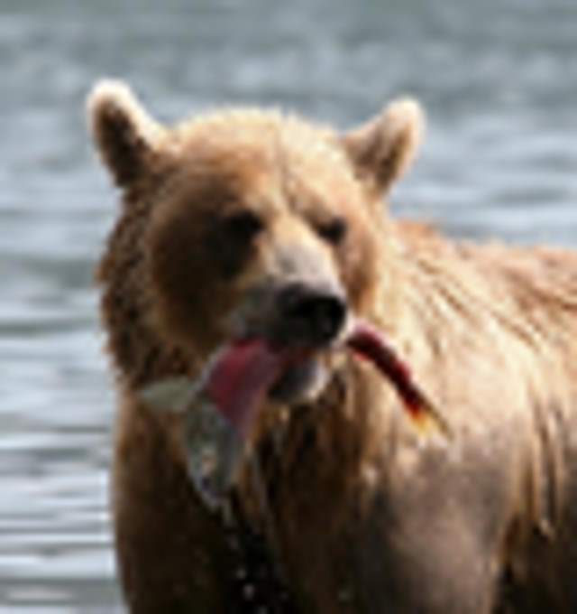

CODING AGENTS AS PIXEL WORLD MODELS
traex/GPT-5.6-Sol · 0872_s0
点击播放 · 原生 RGB 像素
逐轮保存的候选
回放视频、检查图与代码变化。
每份候选均可单独播放。实际图片检查记录在下方工具轨迹中。
候选 01播放与检查图
点击播放 · 原生 RGB 像素


展开代码变化
--- 上一保存版本
+++ 本次保存版本
@@ -0,0 +1,137 @@
+from pathlib import Path
+import math
+import numpy as np
+import cv2
+from PIL import Image
+import artifact_io
+
+CASE = Path(__file__).resolve().parent
+W,H,N = 256,144,81
+base = np.asarray(Image.open(CASE/'first_frame.png').convert('RGB'), dtype=np.uint8)
+yy,xx = np.mgrid[0:H,0:W].astype(np.float32)
+
+def poly_mask(points, blur=5):
+ m=np.zeros((H,W),np.uint8)
+ cv2.fillPoly(m,[np.asarray(points,np.int32)],255)
+ if blur: m=cv2.GaussianBlur(m,(0,0),blur)
+ return m.astype(np.float32)/255
+
+# Carefully traced, overlapping soft regions. Soft coordinate fields retain the photographic texture.
+bear_hard = poly_mask([(78,48),(82,43),(91,48),(100,43),(111,45),(119,42),(125,48),(129,61),(147,61),(169,68),(187,81),(196,101),(211,128),(199,136),(171,133),(143,136),(121,130),(106,128),(94,132),(81,126),(77,112)],2)
+bear_guard = cv2.GaussianBlur((bear_hard>0.08).astype(np.float32),(0,0),5)
+body_mask = poly_mask([(109,62),(132,58),(161,65),(187,78),(194,96),(210,128),(198,136),(166,133),(145,136),(120,128),(112,111)],7)
+head_mask = poly_mask([(78,49),(83,42),(94,49),(103,44),(116,45),(122,41),(128,49),(128,62),(137,71),(134,89),(126,102),(116,113),(99,111),(84,100),(77,83)],5)
+# Fish/tongue area; deformation is anchored at the bear's jaws.
+fish_mask = poly_mask([(100,72),(111,70),(120,76),(130,78),(143,86),(149,96),(143,102),(131,94),(119,90),(113,111),(105,121),(96,113),(100,97)],2.8)
+
+# deterministic flecks/droplets
+rng=np.random.default_rng(872)
+drop_phase=rng.random(9)
+drop_x=rng.uniform(91,126,9)
+drop_speed=rng.uniform(8,17,9)
+drop_size=rng.uniform(.45,1.05,9)
+
+def smooth_bump(t,a,b,c,d):
+ def ss(z): z=np.clip(z,0,1); return z*z*(3-2*z)
+ return ss((t-a)/(b-a+1e-6))*(1-ss((t-c)/(d-c+1e-6)))
+
+def remap_rgb(img, mapx, mapy):
+ return cv2.remap(img,mapx.astype(np.float32),mapy.astype(np.float32),cv2.INTER_CUBIC,borderMode=cv2.BORDER_REFLECT_101)
+
+def add_ripples(im,t):
+ # Antialiased transparent elliptical arcs where the animal meets the lake.
+ out=im.copy()
+ layer=np.zeros_like(out)
+ alpha=np.zeros((H,W),np.uint8)
+ cycles=[(0.00,0.95,150),(0.37,0.68,118),(0.71,0.52,92)]
+ for phase,strength,tone in cycles:
+ age=(t*0.30+phase)%1.0
+ rx=int(20+age*39); ry=max(2,int(2.2+age*5.0))
+ cy=int(130+age*5)
+ col=(tone+8,tone+11,tone+12)
+ cv2.ellipse(layer,(146,cy),(rx,ry),0,7,173,col,1,cv2.LINE_AA)
+ cv2.ellipse(alpha,(146,cy),(rx,ry),0,7,173,int(26*strength*(1-age)),1,cv2.LINE_AA)
+ # dark return arcs give the ripples depth without looking drawn-on
+ age=(t*.23+.22)%1
+ cv2.ellipse(layer,(146,int(131+age*4)),(int(28+age*44),max(2,int(3+age*5))),0,190,347,(56,68,67),1,cv2.LINE_AA)
+ cv2.ellipse(alpha,(146,int(131+age*4)),(int(28+age*44),max(2,int(3+age*5))),0,190,347,int(18*(1-age)),1,cv2.LINE_AA)
+ a=(alpha.astype(np.float32)/255)[:,:,None]
+ return np.clip(out*(1-a)+layer*a,0,255).astype(np.uint8)
+
+frames=[]
+for i in range(N):
+ if i==0:
+ frames.append(base.copy()); continue
+ t=i/16.0
+ # Lake surface: minute, depth-dependent lateral shimmer; shore stays locked.
+ temporal=np.sin(2*np.pi*(0.22*t + yy*.026))-np.sin(2*np.pi*(yy*.026))
+ temporal2=np.sin(2*np.pi*(0.13*t + yy*.041 + .23))-np.sin(2*np.pi*(yy*.041 + .23))
+ water_strength=np.clip((yy-18)/30,0,1)
+ mx=xx + water_strength*(.48*temporal+.25*temporal2)
+ my=yy + water_strength*.13*(np.sin(2*np.pi*(.18*t+xx/87))-np.sin(2*np.pi*(xx/87)))
+ moved=remap_rgb(base,mx,my)
+ wm=np.clip(1-bear_guard*.97,0,1)[:,:,None]
+ im=np.clip(base*(1-wm)+moved*wm,0,255).astype(np.uint8)
+
+ # A slow inhale and small weight shift in the torso.
+ breath=(math.sin(2*math.pi*t/3.15)-0.0)*0.007
+ shift=0.55*(math.sin(2*math.pi*t/4.7))
+ srcx=xx - body_mask*(breath*(xx-151)+shift)
+ srcy=yy - body_mask*(breath*.28*(yy-96))
+ warped=remap_rgb(im,srcx,srcy)
+ a=(body_mask*.93)[:,:,None]
+ im=np.clip(im*(1-a)+warped*a,0,255).astype(np.uint8)
+
+ # The bear lifts its muzzle to secure the catch, then eases back down.
+ lift=smooth_bump(t,.35,1.35,2.65,3.75)
+ second=smooth_bump(t,3.55,4.05,4.55,5.15)
+ dy=-1.65*lift-.45*second + .25*math.sin(2*math.pi*t/2.3)
+ dx=.38*lift
+ angle=math.radians(-0.85*lift + .35*math.sin(2*math.pi*t/3.8))
+ cx,cy=108.,80.
+ X=xx-cx; Y=yy-cy
+ ca,sa=math.cos(-angle),math.sin(-angle)
+ qx=ca*(X-dx)-sa*(Y-dy)+cx
+ qy=sa*(X-dx)+ca*(Y-dy)+cy
+ srcx=xx+(qx-xx)*head_mask
+ srcy=yy+(qy-yy)*head_mask
+ warped=remap_rgb(im,srcx,srcy)
+ a=(head_mask*.96)[:,:,None]
+ im=np.clip(im*(1-a)+warped*a,0,255).astype(np.uint8)
+
+ # Fish flexes at the free end: two subdued flops, jaw end fixed.
+ flop=(math.sin(2*math.pi*(1.35*t))*math.exp(-.32*t) +
+ 1.15*math.sin(2*math.pi*2.0*(t-2.75))*math.exp(-2.2*abs(t-2.75)))
+ anchor=np.clip((xx-108)/40,0,1)
+ fdy=2.25*flop*anchor
+ fdx=.38*flop*np.sin(np.pi*anchor)*anchor
+ warped=remap_rgb(im,xx-fdx*fish_mask,yy-fdy*fish_mask)
+ a=(fish_mask*.9)[:,:,None]
+ im=np.clip(im*(1-a)+warped*a,0,255).astype(np.uint8)
+
+ # Two natural blinks, painted by borrowing the dark eyelid/fur immediately above.
+ blink=max(0,1-abs(t-1.78)/.12,1-abs(t-4.32)/.10)
+ if blink>0:
+ for ex,ey in [(98,69),(119,70)]:
+ cv2.ellipse(im,(ex,ey),(3,1),0,0,360,(39,31,24),-1,cv2.LINE_AA)
+ # retain just a little wet-eye glint except at full closure
+ if blink<.68: cv2.circle(im,(ex,ey),1,(91,81,67),-1,cv2.LINE_AA)
+
+ im=add_ripples(im,t)
+
+ # Fine droplets falling from wet muzzle/fish. Kept sparse and photographic.
+ for j in range(len(drop_x)):
+ u=(t*.46+drop_phase[j])%1.0
+ if u<.55:
+ x=int(drop_x[j]+1.2*math.sin(t*2+j))
+ y=int(91+u*drop_speed[j]*2.25)
+ if 0<=x<W and 0<=y<H:
+ c=tuple(int(v) for v in im[max(0,y-1),x])
+ bright=tuple(min(220,int(v*1.48+18)) for v in c)
+ cv2.circle(im,(x,y),max(1,int(round(drop_size[j]))),bright,-1,cv2.LINE_AA)
+
+ frames.append(im)
+
+frames=np.stack(frames).astype(np.uint8)
+frames[0]=base # contract: exact source image
+artifact_io.save(frames,CASE)
候选 02播放与检查图
点击播放 · 原生 RGB 像素

展开代码变化
代码未变化；重新保存了产物。
可观测工具轨迹
实际执行的命令与返回图片。
命令 1exit 0
/bin/bash -lc "cat prompt.txt && printf '\\n---RULES---\\n' && cat GENERATION_RULES.md"
命令 2exit 0
/bin/bash -lc "find . -maxdepth 2 -type f -printf '%p %s bytes\\n' | sort && printf '\\n---BINARIES---\\n' && command -v ffmpeg && command -v python3 && command -v convert || true"
命令 3exit 0
/bin/bash -lc "cat task_spec.json; sed -n '1,240p' artifact_io.py"
命令 4exit 0
/bin/bash -lc "python3 - <<'PY'
try:
import cv2; print('cv2',cv2.__version__)
except Exception as e: print('no cv2',e)
import numpy, PIL; print(numpy.__version__)
PY"命令 5exit 0
/bin/bash -lc "python3 - <<'PY'
from PIL import Image
im=Image.open('first_frame.png'); im.crop((65,30,145,115)).resize((640,680)).save('crop.png')
PY"命令 6exit 0
/bin/bash -lc "cat > generate.py <<'PY'
from pathlib import Path
import math
import numpy as np
import cv2
from PIL import Image
import artifact_io
CASE = Path(__file__).resolve().parent
W,H,N = 256,144,81
base = np.asarray(Image.open(CASE/'first_frame.png').convert('RGB'), dtype=np.uint8)
yy,xx = np.mgrid[0:H,0:W].astype(np.float32)
def poly_mask(points, blur=5):
m=np.zeros((H,W),np.uint8)
cv2.fillPoly(m,[np.asarray(points,np.int32)],255)
if blur: m=cv2.GaussianBlur(m,(0,0),blur)
return m.astype(np.float32)/255
# Carefully traced, overlapping soft regions. Soft coordinate fields retain the photographic texture.
bear_hard = poly_mask([(78,48),(82,43),(91,48),(100,43),(111,45),(119,42),(125,48),(129,61),(147,61),(169,68),(187,81),(196,101),(211,128),(199,136),(171,133),(143,136),(121,130),(106,128),(94,132),(81,126),(77,112)],2)
bear_guard = cv2.GaussianBlur((bear_hard>0.08).astype(np.float32),(0,0),5)
body_mask = poly_mask([(109,62),(132,58),(161,65),(187,78),(194,96),(210,128),(198,136),(166,133),(145,136),(120,128),(112,111)],7)
head_mask = poly_mask([(78,49),(83,42),(94,49),(103,44),(116,45),(122,41),(128,49),(128,62),(137,71),(134,89),(126,102),(116,113),(99,111),(84,100),(77,83)],5)
# Fish/tongue area; deformation is anchored at the bear's jaws.
fish_mask = poly_mask([(100,72),(111,70),(120,76),(130,78),(143,86),(149,96),(143,102),(131,94),(119,90),(113,111),(105,121),(96,113),(100,97)],2.8)
# deterministic flecks/droplets
rng=np.random.default_rng(872)
drop_phase=rng.random(9)
drop_x=rng.uniform(91,126,9)
drop_speed=rng.uniform(8,17,9)
drop_size=rng.uniform(.45,1.05,9)
def smooth_bump(t,a,b,c,d):
def ss(z): z=np.clip(z,0,1); return z*z*(3-2*z)
return ss((t-a)/(b-a+1e-6))*(1-ss((t-c)/(d-c+1e-6)))
def remap_rgb(img, mapx, mapy):
return cv2.remap(img,mapx.astype(np.float32),mapy.astype(np.float32),cv2.INTER_CUBIC,borderMode=cv2.BORDER_REFLECT_101)
def add_ripples(im,t):
# Antialiased transparent elliptical arcs where the animal meets the lake.
out=im.copy()
layer=np.zeros_like(out)
alpha=np.zeros((H,W),np.uint8)
cycles=[(0.00,0.95,150),(0.37,0.68,118),(0.71,0.52,92)]
for phase,strength,tone in cycles:
age=(t*0.30+phase)%1.0
rx=int(20+age*39); ry=max(2,int(2.2+age*5.0))
cy=int(130+age*5)
col=(tone+8,tone+11,tone+12)
cv2.ellipse(layer,(146,cy),(rx,ry),0,7,173,col,1,cv2.LINE_AA)
cv2.ellipse(alpha,(146,cy),(rx,ry),0,7,173,int(26*strength*(1-age)),1,cv2.LINE_AA)
# dark return arcs give the ripples depth without looking drawn-on
age=(t*.23+.22)%1
cv2.ellipse(layer,(146,int(131+age*4)),(int(28+age*44),max(2,int(3+age*5))),0,190,347,(56,68,67),1,cv2.LINE_AA)
cv2.ellipse(alpha,(146,int(131+age*4)),(int(28+age*44),max(2,int(3+age*5))),0,190,347,int(18*(1-age)),1,cv2.LINE_AA)
a=(alpha.astype(np.float32)/255)[:,:,None]
return np.clip(out*(1-a)+layer*a,0,255).astype(np.uint8)
frames=[]
for i in range(N):
if i==0:
frames.append(base.copy()); continue
t=i/16.0
# Lake surface: minute, depth-dependent lateral shimmer; shore stays locked.
temporal=np.sin(2*np.pi*(0.22*t + yy*.026))-np.sin(2*np.pi*(yy*.026))
temporal2=np.sin(2*np.pi*(0.13*t + yy*.041 + .23))-np.sin(2*np.pi*(yy*.041 + .23))
water_strength=np.clip((yy-18)/30,0,1)
mx=xx + water_strength*(.48*temporal+.25*temporal2)
my=yy + water_strength*.13*(np.sin(2*np.pi*(.18*t+xx/87))-np.sin(2*np.pi*(xx/87)))
moved=remap_rgb(base,mx,my)
wm=np.clip(1-bear_guard*.97,0,1)[:,:,None]
im=np.clip(base*(1-wm)+moved*wm,0,255).astype(np.uint8)
# A slow inhale and small weight shift in the torso.
breath=(math.sin(2*math.pi*t/3.15)-0.0)*0.007
shift=0.55*(math.sin(2*math.pi*t/4.7))
srcx=xx - body_mask*(breath*(xx-151)+shift)
srcy=yy - body_mask*(breath*.28*(yy-96))
warped=remap_rgb(im,srcx,srcy)
a=(body_mask*.93)[:,:,None]
im=np.clip(im*(1-a)+warped*a,0,255).astype(np.uint8)
# The bear lifts its muzzle to secure the catch, then eases back down.
lift=smooth_bump(t,.35,1.35,2.65,3.75)
second=smooth_bump(t,3.55,4.05,4.55,5.15)
dy=-1.65*lift-.45*second + .25*math.sin(2*math.pi*t/2.3)
dx=.38*lift
angle=math.radians(-0.85*lift + .35*math.sin(2*math.pi*t/3.8))
cx,cy=108.,80.
X=xx-cx; Y=yy-cy
ca,sa=math.cos(-angle),math.sin(-angle)
qx=ca*(X-dx)-sa*(Y-dy)+cx
qy=sa*(X-dx)+ca*(Y-dy)+cy
srcx=xx+(qx-xx)*head_mask
srcy=yy+(qy-yy)*head_mask
warped=remap_rgb(im,srcx,srcy)
a=(head_mask*.96)[:,:,None]
im=np.clip(im*(1-a)+warped*a,0,255).astype(np.uint8)
# Fish flexes at the free end: two subdued flops, jaw end fixed.
flop=(math.sin(2*math.pi*(1.35*t))*math.exp(-.32*t) +
1.15*math.sin(2*math.pi*2.0*(t-2.75))*math.exp(-2.2*abs(t-2.75)))
anchor=np.clip((xx-108)/40,0,1)
fdy=2.25*flop*anchor
fdx=.38*flop*np.sin(np.pi*anchor)*anchor
warped=remap_rgb(im,xx-fdx*fish_mask,yy-fdy*fish_mask)
a=(fish_mask*.9)[:,:,None]
im=np.clip(im*(1-a)+warped*a,0,255).astype(np.uint8)
# Two natural blinks, painted by borrowing the dark eyelid/fur immediately above.
blink=max(0,1-abs(t-1.78)/.12,1-abs(t-4.32)/.10)
if blink>0:
for ex,ey in [(98,69),(119,70)]:
cv2.ellipse(im,(ex,ey),(3,1),0,0,360,(39,31,24),-1,cv2.LINE_AA)
# retain just a little wet-eye glint except at full closure
if blink<.68: cv2.circle(im,(ex,ey),1,(91,81,67),-1,cv2.LINE_AA)
im=add_ripples(im,t)
# Fine droplets falling from wet muzzle/fish. Kept sparse and photographic.
for j in range(len(drop_x)):
u=(t*.46+drop_phase[j])%1.0
if u<.55:
x=int(drop_x[j]+1.2*math.sin(t*2+j))
y=int(91+u*drop_speed[j]*2.25)
if 0<=x<W and 0<=y<H:
c=tuple(int(v) for v in im[max(0,y-1),x])
bright=tuple(min(220,int(v*1.48+18)) for v in c)
cv2.circle(im,(x,y),max(1,int(round(drop_size[j]))),bright,-1,cv2.LINE_AA)
frames.append(im)
frames=np.stack(frames).astype(np.uint8)
frames[0]=base # contract: exact source image
artifact_io.save(frames,CASE)
PY
python3 generate.py
python3 - <<'PY'
import numpy as np
from PIL import Image
z=np.load('pixels.npz')['pixels']; print(z.shape,z.dtype)
a=np.array(Image.open('first_frame.png')); b=np.array(Image.open('frames/00.png')); print('exact',np.array_equal(a,b),'delta avg',np.mean(np.abs(np.array(Image.open('frames/40.png')).astype(int)-a.astype(int))))
PY"视觉工具实际返回图片 1

视觉工具实际返回图片 2

视觉工具实际返回图片 3

视觉工具实际返回图片 4

保存候选 2 份；完成命令 6 次；可验证图片返回 4 张。原始 API 响应与完整日志保留在本地。